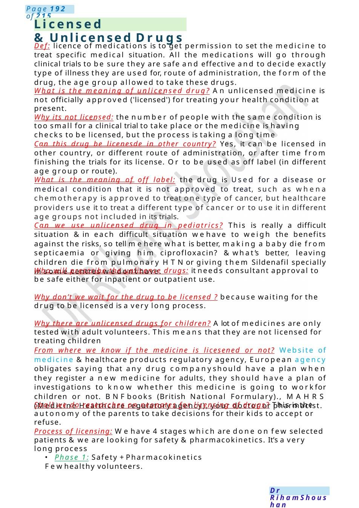

Licensed &Unlicensed Drugs
Def: licence of medications is to get permission to set the medicine to treat specific medical situation. All the medications will go through clinical trials to be sure they are safe and effective and to decide exactly type of illness they are used for, route of administration, the form of the drug, the age group allowed to take these drugs. What is the meaning of unlicensed drug? An unlicensed medicine is not officially approved ('licensed') for treating your health condition at present.
Scenario Summary
Def: licence of medications is to get permission to set the medicine to treat specific medical situation. All the medications will go through clinical trials to be sure they are safe and effective and to decide exactly type of illness they are used for, route of administration, the form of the drug, the age group allowed to take these drugs. What is the meaning of unlicensed drug? An unlicensed medicine is not officially approved ('licensed') for treating your health condition at present.
Full Original Scenario

Licensed &Unlicensed Drugs
Def: licence of medications is to get permission to set the medicine to treat specific medical situation. All the medications will go through clinical trials to be sure they are safe and effective and to decide exactly type of illness they are used for, route of administration, the form of the drug, the age group allowed to take these drugs.
What is the meaning of unlicensed drug? An unlicensed medicine is not officially approved ('licensed') for treating your health condition at present.
Why its not licensed: the number of people with the same condition is too small for a clinical trial to take place or the medicine is having checks to be licensed, but the process is taking a long time
Can this drug be licenesde in other country? Yes, it can be licensed in other country, or different route of administration, or after time from finishing the trials for its license. Or to be used as off label (in different age group or route).
What is the meaning of off label: the drug is Used for a disease or medical condition that it is not approved to treat, such as whena chemotherapy is approved to treat one type of cancer, but healthcare providers use it to treat a different type of cancer or to use it in different age groups not included in its trials.
Can we use unlicensed drug in pediatrics? This is really a difficult situation &in each difficult situation wehave to weigh the benefits against the risks, so tell mehere what is better, making a baby die from septicaemia or giving him ciprofloxacin? &what’s better, leaving children die from pulmonary HTNor giving them Sildenafil specially in some centres wedon’t have.
Who will prescribe the unlicense drugs: it needs consultant approval to be safe either for inpatient or outpatient use.
Why don’t we wait for the drug to be licensed ? because waiting for the drug to be licensed is a very long process.
Why there are unlicensed drugs for children? Alot of medicines are only tested with adult volunteers. This means that they are not licensed for treating children
From where we know if the medicine is licesened or not? Website of medicine &healthcare products regulatory agency, European agency obligates saying that any drug companyshould have a plan when they register a new medicine for adults, they should have a plan of investigations to know whether this medicine is going to workfor children or not. BNFbooks (British National Formulary)., MAHRS (Medicine Healthcare regulatory agency), your doctor or pharmacist.
Shall we do researches on neonates for licensing of drugs? This is the autonomy of the parents to take decisions for their kids to accept or refuse.
Process of licensing: Wehave 4 stages which are done on few selected patients &we are looking for safety &pharmacokinetics. It’s a very long process
- Phase 1: Safety +Pharmacokinetics Fewhealthy volunteers.

Safety Measures At Home
- Phase 2: Dose +Efficacy Morepatients.
- Phase 3: Comparison With the best medicine (RCT).
- Phase 4: Approval Fromlicensing agencies.
- Phase 5: Marketing Widely available (post-licensing).
What is the method to get license for drug? Clinical trials RCT
Scenario: talk to momif child 1.5y cameto hospital with 2nd degree burn on his shoulder &back due to spoil of hot tea while the mominvited her friends at home. The mother had another 2 kids 2.5y & 3.5 y whowas admitted before because of fracture humerus ®istered to social worker. nowhe is for discharge and the task is to talk to the mother about safety measures at home.
Talk to the momabout what happened with checking her prior knowledge.
Explain to her the measures to be done at homeafter discharge:
- In the kitchen
Keep your toddler out of the kitchen, away from kettles, Saucepans &hot oven doors, put a safety gate across the doorway to stop them getting in.
AKettle with a short or curly cord to avoid hanging it over the edge of the surface.
Whencooking, use the rings at the back of the cooker and turn saucepan handles towards the back to be away from the reach of the child hand.
- In the bathroom
Never leave a child under five alone in the bath, even for a moment
Fit a thermostatic mixing valve to your bath’s hot tap to control the temperature
Put cold water into the bath first, then add the hot water – use your elbow to test the temperature of the water before you put your baby or toddler in the bath.